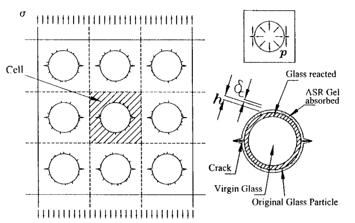
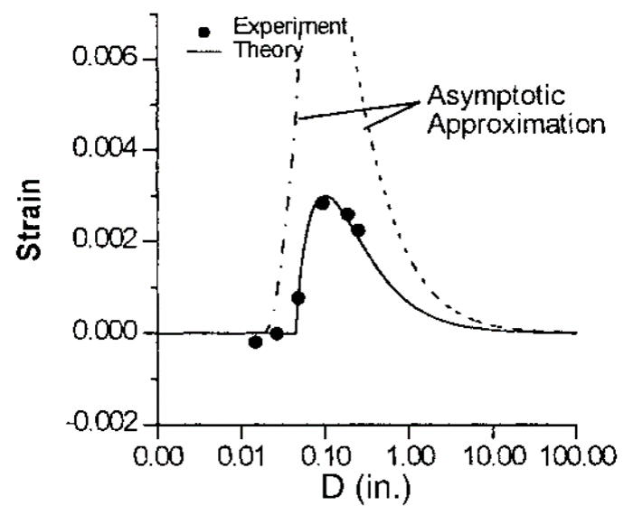
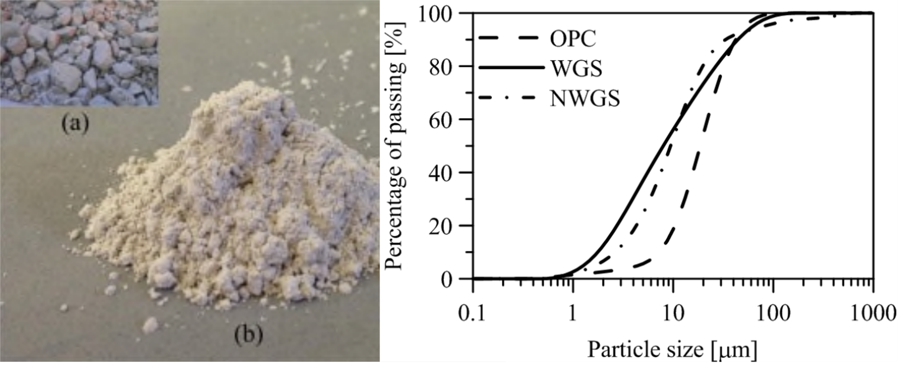
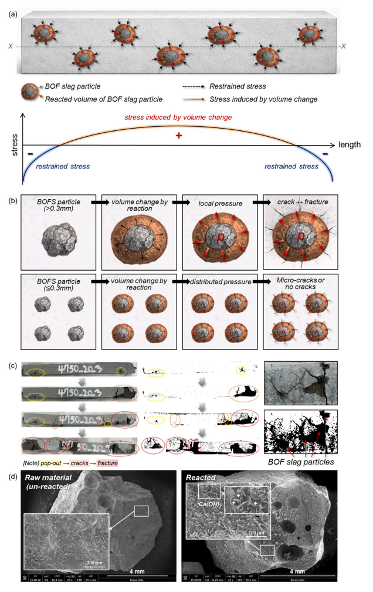
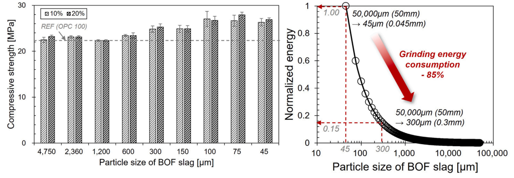

Why Can a Harmful Waste Particle Become a Useful Concrete Material?
A 25-year story from waste glass and alkali-silica reaction to particle-size control of BOF slag
A waste material can be chemically reactive.
That sounds useful.
But the same reactivity can also destroy concrete.
This apparent contradiction has followed one line of our research for more than two decades.
It began around 2000 with a deceptively simple question about waste glass:
Why does the size of a reactive glass particle determine whether it cracks concrete?
At that time, the problem was alkali-silica reaction (ASR). Waste glass used as aggregate could react with the alkaline pore solution of concrete, produce expansive reaction products, and cause cracking.
But the experiments revealed something much more interesting than simply
\[ \text{glass} \rightarrow \text{ASR} \rightarrow \text{damage}. \]
Particle size changed the outcome.
Making glass particles smaller initially increased the damaging expansion.
Then, below a certain size, the trend reversed.
Eventually the glass became sufficiently fine that the harmful macroscopic expansion disappeared.
That observation led Zdeněk P. Bažant, Christian Meyer, and me to examine the problem using fracture mechanics.
More than two decades later, the same basic mechanics unexpectedly reappeared in our research on basic oxygen furnace (BOF) slag.
The chemistry was different.
The waste material was different.
But the central mechanics question was remarkably similar:
When does a local expansive chemical reaction become a macroscopic crack?
The answer, in both cases, depends strongly on particle size.
The story began with a crack
Consider a reactive particle embedded in a cementitious matrix.
If a chemical reaction produces an expansive product around that particle, the reaction creates pressure against the surrounding material.
The important sequence is therefore
\[ \text{chemical reaction} \rightarrow \text{expansion} \rightarrow \text{pressure} \rightarrow \text{stress} \rightarrow \text{cracking}. \]
Chemistry initiates the process.
But mechanics determines whether the surrounding concrete actually cracks.

In our 2000 study, the glass particle was idealized as an expanding inclusion surrounded by mortar.
Alkali-silica reaction occurred near the glass surface, and the resulting expansive gel generated pressure against the surrounding cementitious matrix.
Existing flaws around the particle could then grow into cracks.
This immediately suggests a fracture-mechanics question.
It is not enough to ask:
How much reaction product is generated?
We must also ask:
Is the resulting pressure capable of driving a crack?
That distinction became essential for understanding the particle-size effect.
Why should particle size matter?
One might initially expect a simple relationship.
Smaller particles have larger surface area per unit mass.
More surface area should promote reaction.
Therefore,
\[ \text{smaller particles} \rightarrow \text{more reaction} \rightarrow \text{more expansion}. \]
But that was not what the experiments showed.
The relationship between particle size and ASR damage was non-monotonic.
As the glass particles became smaller, expansion initially increased.
A maximum occurred at an intermediate particle size—the so-called pessimum size.
When the particles became still smaller, expansion decreased again.
In the accelerated tests considered in the 2000 study, the pessimum size was around the millimeter scale, while adverse expansion was no longer detectable when the glass particles became sufficiently fine.

This is the first important clue.
Chemical reactivity and structural damage are not the same thing.
Two competing size effects
Why can smaller particles eventually become less damaging even though they may react more readily?
Because two mechanisms compete.
The first is chemical.
Reducing particle size increases the available reactive surface.
Schematically,
\[ d\downarrow \quad\Rightarrow\quad \frac{A}{V}\uparrow \quad\Rightarrow\quad \text{reaction potential}\uparrow. \]
This tends to increase reaction.
But there is another mechanism.
A crack must obtain enough energy from the expanding particle to propagate through the surrounding matrix.
As the characteristic particle size decreases, the spatial scale over which the expansive reaction acts also decreases.
The ability of an individual particle to generate and drive a macroscopic crack therefore changes.
In fracture-mechanics terms, the question becomes whether the energy available from expansion is sufficient to overcome the resistance associated with crack growth.
So particle size affects both
\[ \boxed{ \text{reaction} } \]
and
\[ \boxed{ \text{fracture}. } \]
These two effects do not scale in the same way.
That is why a pessimum size can exist.
More reaction does not necessarily mean more damage
This was the conceptual result that stayed with me.
Suppose we reduce the size of a reactive particle.
Its chemistry may become more active because more surface is exposed.
But the reaction also becomes distributed over a much larger number of smaller particles.
Instead of a few strong localized expansion sources, we may obtain many smaller reaction sites.
The mechanical picture changes from something like
\[ \boxed{\text{large particle}} \rightarrow \text{localized expansion} \rightarrow \text{high local crack-driving action} \]
toward
\[ \boxed{\text{many fine particles}} \rightarrow \text{distributed reaction} \rightarrow \text{distributed deformation}. \]
The chemistry has not disappeared.
What has changed is how the chemical reaction enters the mechanics of the material.
That distinction eventually changed the engineering question completely.
What if glass becomes sufficiently fine?
Once glass particles become very fine, perhaps we should stop thinking of them as aggregate.
They begin to behave more like a powder.
And that suggests a different role.
Glass contains large amounts of silica, much of it in an amorphous state.
Finely divided glass can therefore participate in pozzolanic reactions.
The engineering question then changes from
How can we stop waste glass from damaging concrete?
to
Can we use its reactivity beneficially?
This is a profound reversal.
The same basic material moves from
\[ \text{potentially harmful reactive aggregate} \]
to
\[ \text{potentially useful supplementary cementitious material}. \]
The boundary between the two is strongly influenced by particle size.
From waste glass aggregate to waste glass powder
Our later research returned repeatedly to this idea using different sources of waste glass.
One example was waste glass sludge produced during glass manufacturing.
Fine glass dust generated during cutting and polishing is washed away with water. During wastewater treatment, precipitation additives are used to help separate the glass particles, producing a sludge cake.
After drying and grinding, that industrial waste becomes a fine powder.

Our 2016 study compared waste glass sludge produced with precipitation additives with corresponding glass sludge prepared without those additives.
An unexpected result emerged.
The sludge containing the precipitation additives showed greater pozzolanic potential.
The waste-treatment process had not merely separated the glass.
It had altered the subsequent behavior of the material.
In particular, caustic soda used during wastewater treatment is itself associated with alkaline activation.
So an industrial processing history that might initially appear irrelevant to concrete performance became part of the material’s reactivity.
This is another useful lesson in waste utilization:
A waste material is defined not only by what it is chemically, but also by what has happened to it before we receive it.
The 2016 study explicitly situated this work within the earlier particle-size research: fineness had become one of the key parameters governing whether waste glass could be used beneficially as a concrete admixture.
Then came LCD glass
The research subsequently moved to another industrial glass waste: liquid-crystal-display glass.
LCD glass was particularly interesting because its composition differs from ordinary soda-lime container glass.
It contains substantial amorphous silica and alumina while having very low alkali content.
That combination made it promising as a supplementary cementitious material.
The research question was no longer simply
Is fine glass safe?
It became
What useful properties can fine waste glass give to concrete?
From avoiding ASR to improving durability
In concrete pavement applications, LCD glass powder was investigated as a partial cement replacement.
The material satisfied the relevant chemical and physical requirements considered for a Class F pozzolanic admixture.
More importantly, incorporating LCD glass powder improved resistance to two important deterioration mechanisms:
- alkali-silica reaction,
- chloride penetration.
Its later-age strength development and resistance to freezing and thawing were also comparable to those of the fly-ash concrete examined in the study.
This is an interesting point in the research history.
The original 2000 problem was:
\[ \boxed{\text{glass causes ASR}} \]
Yet sufficiently fine and appropriately composed waste glass could later be used to help produce concrete with greater resistance to ASR.
That is not a contradiction.
It is a consequence of changing the scale and role of the material.
The powder eventually became part of the mechanics
The research then moved beyond conventional concrete durability.
LCD glass powder was incorporated into ultra-high-performance fiber-reinforced concrete.
Here the important question was not simply whether glass could replace another powder.
The matrix controls how steel fibers interact with the surrounding cementitious material.
That means changing the powder can eventually change
\[ \text{matrix} \rightarrow \text{fiber-matrix interface} \rightarrow \text{fiber pullout} \rightarrow \text{tensile behavior}. \]
In one study, replacing quartz powder with LCD glass powder up to an appropriate level enhanced the matrix through pozzolanic reaction despite changes in packing density.
At 50% replacement of quartz powder, the reported fiber-pullout energy was 142% higher than that of the reference UHPC matrix.
The corresponding UHPFRC showed increases of 150% in tensile strain capacity and 174% in energy absorption relative to the reference material.
These numbers belong to that particular mixture and curing system and should not be treated as general factors.
But their mechanical meaning is important.
The waste powder had progressed from something whose cracking effect needed to be controlled to something capable of modifying the tensile response of a high-performance composite.
Glass also became a chemical component of new binders
The next step moved still further away from the original aggregate problem.
LCD glass powder was combined with blast-furnace slag in alkali-activated materials.
Now the glass was not simply replacing aggregate or conventional filler.
It was participating directly in binder chemistry.
The 2023 study found that replacing slag with LCD glass powder up to 50% could be achieved without strength loss under the investigated conditions, while 25% LCD glass powder improved pore structure and precursor reactivity.
But excessive LCD glass powder—more than 50% in that system—reduced the pore-solution pH, reduced precursor reactivity, and caused significant strength loss.
Again we encounter the same engineering principle:
\[ \boxed{ \text{more of a beneficial mechanism} \not\Rightarrow \text{better performance indefinitely}. } \]
There is usually an optimum governed by competing mechanisms.
Then a different waste material brought us back to 2000
More recently, we began investigating basic oxygen furnace slag.
BOF slag is produced during steelmaking.
At first sight, this seems to be a very different problem from waste glass.
Glass-related expansion is associated with alkali-silica reaction.
The principal volume-instability concern considered in our BOF study is associated with free CaO.
Free CaO hydrates according to
\[ \mathrm{CaO}+\mathrm{H_2O} \rightarrow \mathrm{Ca(OH)_2}. \]
The reaction produces substantial volume expansion.
If that expansion occurs locally inside a cementitious matrix, stresses develop around the reacting slag particle.
And suddenly the mechanics looks familiar.
Different chemistry, same mechanics
For waste glass:
\[ \text{ASR} \rightarrow \text{expansive reaction product} \rightarrow \text{local pressure} \rightarrow \text{cracking}. \]
For BOF slag:
\[ \text{free-CaO hydration} \rightarrow \text{volume increase} \rightarrow \text{local expansive stress} \rightarrow \text{cracking}. \]
The chemical reactions are different.
But from the viewpoint of the surrounding cementitious matrix, both problems contain an expanding inclusion.
That takes us back to the question we had asked more than two decades earlier:
How does the size of the reactive particle control whether expansion becomes cracking?
Coarse BOF slag localizes the expansion
Our 2026 study classified BOF slag into nine particle-size fractions ranging from below 45 \(\mu\)m to several millimeters and examined their expansion behavior at different incorporation ratios.
The results were strongly size dependent.
Coarse particles produced localized hydration and concentrated expansive stresses.
Cracks and pop-outs developed around those particles.
Finer particles behaved differently.
The hydration reactions became more spatially distributed, and macroscopic cracking was suppressed.

The experimental observations were particularly revealing.
For the conditions investigated, all BOF slag fractions of 600 \(\mu\)m and above eventually fractured.
The 600 \(\mu\)m fraction exhibited especially severe deterioration, showing that the relationship between particle size and damage was again not simply monotonic.
At a 10% incorporation ratio, no visible cracking or pop-outs were observed for particles finer than approximately 300 \(\mu\)m.
At the higher 20% incorporation ratio, a finer particle size was needed to maintain comparable stability.
So once again,
\[ \boxed{ \text{particle size governs whether local chemical expansion becomes structural damage}. } \]
Why do fine particles behave differently?
Imagine the same amount of reactive material divided into different particle sizes.
With coarse particles, the expansive reaction is concentrated at relatively few locations.
Each particle acts as a larger local expansion source.
Schematically,
\[ \text{few coarse particles} \rightarrow \text{localized reaction} \rightarrow \text{concentrated stress} \rightarrow \text{crack}. \]
When the same material is divided into many finer particles,
\[ \text{many fine particles} \rightarrow \text{distributed reaction} \rightarrow \text{distributed stress} \rightarrow \text{reduced macroscopic damage}. \]
This is not merely a chemical explanation.
It is a mechanical length-scale argument.
The characteristic size of the expanding region matters relative to the surrounding material’s ability to accommodate deformation and resist fracture.
That is why the conceptual connection to the earlier waste-glass research is so strong.
But should we simply grind everything as finely as possible?
This is where the BOF-slag problem adds another dimension to the original glass story.
Suppose smaller particles suppress expansion.
Then the simplest recommendation might seem obvious:
Grind the slag as finely as possible.
But grinding requires energy.
And BOF slag is particularly difficult to grind because of its hardness and high iron content.
So particle-size reduction has both a benefit and a cost.
The real engineering problem is therefore not
\[ \min d. \]
It is something closer to
\[ \boxed{ \text{find }d \text{ that is sufficiently small for stability, but not unnecessarily small}. } \]
There is a point where more grinding gives little benefit
The BOF study provides a particularly useful comparison.
As particle size decreased, the 28-day compressive strength generally improved, with a pronounced improvement in the range below approximately 300 \(\mu\)m.
That range also corresponded to the expansion-stable region identified for the lower incorporation ratio.
But grinding energy rises rapidly as the target particle size becomes smaller.
Using Bond’s law, the relative grinding-energy demand can be represented as
\[ W \propto \frac{1}{\sqrt{d_p}} - \frac{1}{\sqrt{d_f}}, \]
where \(d_f\) is the feed size and \(d_p\) is the desired product size.

For the assumptions used in the study, reducing the BOF slag to approximately
\[ 300~\mu\mathrm{m} \]
required only about 15% of the estimated grinding energy required to reach 45 \(\mu\)m.
In other words, pushing the material all the way into the ultrafine range requires a disproportionately large additional energy input.
If the mechanical problem has already been controlled, that additional grinding may provide little engineering value.
The threshold depends on how much slag we use
There is an important qualification.
There is no universal particle size below which BOF slag automatically becomes safe.
Particle size interacts with incorporation ratio.
At a higher slag content, more reactive particles are present simultaneously and less surrounding pore space is available to accommodate the reaction products.
Consequently, the same particle size can become more damaging when more BOF slag is incorporated.
Under the conditions investigated in the 2026 study, a particle size below approximately
\[ 300~\mu\mathrm{m} \]
was adequate at an incorporation ratio of about 10%, whereas a ratio approaching 20% required finer grinding, around
\[ 75~\mu\mathrm{m}. \]
These values are not universal design limits.
They depend on mixture design, slag characteristics, free-CaO content, and exposure conditions.
But they demonstrate something much more general:
Particle size should be designed together with the amount of reactive material.
A 25-year research question
Looking back, what interests me most is not that the research began with waste glass and eventually arrived at BOF slag.
It is that the same question kept returning in different forms.
Around 2000, the question was:
Why does waste-glass particle size produce a pessimum ASR response?
Fracture mechanics showed that reaction alone could not explain the observation.
Later, the question became:
Can sufficiently fine waste glass be used rather than merely tolerated?
The answer led toward waste-glass sludge, LCD glass powder, durability, UHPC, and alkali-activated binders.
Then BOF slag brought the problem back to expansive particles:
How small must a reactive slag particle become before its expansion no longer produces damaging cracks?
And finally:
How much grinding is actually necessary to achieve that change?
The research path can therefore be summarized as
\[ \boxed{ \begin{aligned} \text{reactive particle} &\rightarrow \text{fracture mechanics} \\ &\rightarrow \text{particle-size effect} \\ &\rightarrow \text{fine reactive powder} \\ &\rightarrow \text{useful cementitious material} \\ &\rightarrow \text{particle-size design}. \end{aligned} } \]
The real variable is not simply particle size
Particle size is the variable we can measure and control.
But mechanically, something deeper is happening.
By changing particle size, we change the spatial distribution of chemical reaction.
That changes the spatial distribution of expansion.
That changes the stress field.
And that changes the ability of cracks to initiate and propagate.
So the deeper chain is
\[ \boxed{ \text{particle size} \rightarrow \text{reaction localization} \rightarrow \text{expansion localization} \rightarrow \text{stress localization} \rightarrow \text{fracture}. } \]
This is why particle-size control can transform a material from damaging to useful.
Waste utilization should be a mechanics problem too
Waste recycling in concrete is often discussed primarily in terms of
- chemical composition,
- replacement ratio,
- compressive strength,
- carbon reduction,
- and disposal volume.
All of these are important.
But reactive industrial wastes also pose a mechanics problem.
A material may contain a chemically unstable phase.
That does not automatically mean it cannot be used.
The relevant engineering questions are:
- How fast does it react?
- How much does it expand?
- Over what spatial scale does the reaction occur?
- What stress field does that expansion generate?
- Can the surrounding matrix accommodate it?
- Can the reaction drive a crack?
- What processing is required to move the system into a stable regime?
This is where materials chemistry and fracture mechanics meet.
Why the finest powder is not necessarily the best powder
There is a tendency in supplementary cementitious-material research to associate greater fineness with better performance.
Often that is partly true.
Finer particles provide greater surface area and can improve packing or accelerate reaction.
But engineering optimization should not ask
\[ \text{How fine can we grind it?} \]
It should ask
\[ \boxed{ \text{How fine does it need to be?} } \]
Once particle size is below the threshold required to suppress the damaging mechanism, additional grinding must justify its additional energy and cost.
This distinction becomes particularly important when the objective of waste utilization is sustainability.
Using an industrial by-product is not automatically sustainable if making it usable requires unnecessary processing energy.
Limitations
The numerical thresholds discussed here should not be transferred directly from one waste material or mixture to another.
The 2000 waste-glass results concerned alkali-silica reaction under specific accelerated experimental conditions and a particular glass-concrete system.
The later waste-glass studies examined different sources of glass, processing histories, particle sizes, binder systems, and curing conditions.
The BOF-slag study used a particular slag source and evaluated incorporation ratios of 10% and 20% under specified accelerated expansion conditions.
Its particle-size thresholds therefore apply to the investigated system rather than defining universal limits for BOF slag.
Likewise, the grinding-energy comparison was based on an idealized Bond-law estimate rather than a complete industrial life-cycle or economic analysis.
The broader conclusion is not a universal number such as
\[ 300~\mu\mathrm{m}. \]
It is the mechanics behind that number.
Engineering takeaway
A reactive waste particle can be harmful when its reaction is sufficiently localized to generate a crack.
The same material, when sufficiently fine, can distribute that reaction over a smaller spatial scale and may become a useful component of a cementitious system.
That is why the transition
\[ \text{waste aggregate} \rightarrow \text{reactive powder} \]
can completely change engineering performance.
The lesson from waste glass eventually became a useful way to think about BOF slag.
And the practical conclusion is deliberately not
Grind reactive waste as finely as possible.
It is:
Grind it as finely as necessary to change the mechanics from localized damage to distributed reaction.
For BOF slag, that becomes an even simpler engineering rule:
Do not grind BOF slag as finely as possible. Grind it as finely as necessary.
Original research
Bažant, Z. P., Zi, G., & Meyer, C. (2000). Fracture mechanics of ASR in concretes with waste glass particles of different sizes. Journal of Engineering Mechanics, 126(3), 226–232. DOI: 10.1061/(ASCE)0733-9399(2000)126:3(226)
You, I., Choi, J., Lange, D. A., & Zi, G. (2016). Pozzolanic reaction of the waste glass sludge incorporating precipitation additives. Computers and Concrete, 17(2), 255–269. DOI: 10.12989/cac.2016.17.2.255
You, I., Zi, G., Yoo, D.-Y., & Lange, D. A. (2019). Durability of concrete containing liquid crystal display glass powder for pavement. ACI Materials Journal, 116(6), 87–97. DOI: 10.14359/51716814
Yoo, D.-Y., You, I., & Zi, G. (2021). Effects of waste liquid-crystal display glass powder and fiber geometry on the mechanical properties of ultra-high-performance concrete. Construction and Building Materials, 266, 120938.
You, I., Lee, Y., Yoo, D.-Y., & Zi, G. (2022). Influence of liquid crystal display glass powder on the tensile performance of ultra-high-performance fiber-reinforced concrete. Journal of Building Engineering, 57, 104901. DOI: 10.1016/j.jobe.2022.104901
You, I., Yoo, D.-Y., Lee, S.-J., Lee, Y., & Zi, G. (2023). A combination of liquid-crystal display glass powder and slag in alkali-activated material. Construction and Building Materials, 369, 130527. DOI: 10.1016/j.conbuildmat.2023.130527
Lee, Y., Seo, S., Yi, C., Lee, S.-H., & Zi, G. (2026). Governing role of particle size in expansion of cement composites incorporating basic oxygen furnace slag. Case Studies in Construction Materials, 25, e06428. DOI: 10.1016/j.cscm.2026.e06428